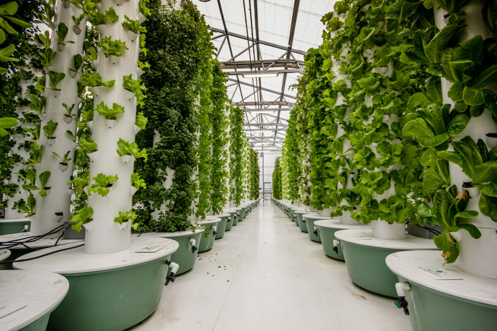

Aeroponics Farming
Aeroponic systems nourish plants with nothing more than nutrient-laden mist. The concept builds off that of hydroponic systems, in which the roots are held in a soilless growing medium, such as coco coir, over which nutrient-laden water is periodically pumped. Aeroponics simply dispenses with the growing medium, leaving the roots to dangle in the air, where they are periodically puffed by specially-designed misting devices. In aeroponics systems, seeds are “planted” in pieces of foam stuffed into tiny pots, which are exposed to light on one end and nutrient mist on the other. The foam also holds the stem and root mass in place as the plants grow.
Advantage
Who knew naked roots could survive, much less thrive? It turns out that eliminating the growing medium is very freeing for a plants’ roots: the extra oxygen they are exposed to results in faster growth. Aeroponic systems are also extremely water-efficient. These closed-loop systems use 95 percent less irrigation than plants grown in soil. And since the nutrients are held in the water, they get recycled, too. In addition to these efficiencies, aeroponics’ eco-friendly reputation is bolstered by the ability to grow large quantities of food in small spaces. The approach is mainly employed in indoor vertical farms, which are increasingly common in cities – cutting down on the environmental costs of getting food from field to plate. And because aeroponics systems are fully enclosed, there is no nutrient runoff to foul nearby waterways. Rather than treating pest and disease with harsh chemicals, the growing equipment can simply be sterilized as needed.
Disadvantage
Aeroponics systems require a bit of finesse to operate effectively. The nutrient concentration of the water must be maintained within precise parameters and even a slight malfunction of your equipment can cause the loss of a crop. If the misters don’t spray every few minutes – maybe because the power goes out, for example – those dangling roots will quickly desiccate. And the misters need regular cleaning to keep them from becoming clogged by mineral deposits in the water. There is also one major drawback, environmentally-speaking: aeroponic systems rely on electrical power to pump water through the tiny misting devices. And while they can be employed in the natural light of a greenhouse, they are more often used with energy-intensive grow lights. Solar power or other alternative energy sources can be harnessed to eliminate this drawback, however.
Aquaponics Farming
According to a joint report from the Food And Agriculture Organization and SmartFish, aquaponics is the cultivation of plants and aquatic animals in a recirculating environment. Aquaponics is a cooperation between plants and fish and the term originates from the two words aquaculture (the growing of fish in a closed environment) and hydroponics (the growing of plants usually in a soil-less environment). Aquaponic systems come in various sizes from small indoor units to large commercial units. and they can be either freshwater systems or contain salt or brackish water. In other words, according to the Aquaponics Gardening Community, cited by Thorarinsdottir, aquaponics is the cultivation of fish and plants together in a constructed, recirculating ecosystem utilizing natural bacterial cycles to convert fish waste to plant nutrition. This is an environmentally friendly, natural food-growing method that harnesses the best attributes of aquaculture and hydroponics without the need to discard any water or filtrate or add chemical fertilizers.
Advantage
One of the benefits of aquaponics is that it makes it possible to have an intensive food production system that’s still sustainable; Aquaponics encompasses two agricultural products (fish and vegetables) being produced from one nitrogen source (fish food); Aquaponics is an extremely water-efficient system. In fact, Nelson and Pade say aquaponics only needs 1/6th of the water to grow 8 times more food per acre compared to traditional agriculture; Aquaponics doesn’t require soil and therefore it’s not susceptible to soil-borne diseases; Aquaponics doesn’t require using fertilizers or chemical pesticides; Aquaponics is a synonym of higher yields and qualitative production; Aquaponics means a higher level of biosecurity and lower risks from outer contaminants; Aquaponics allows a higher control (as it’s easier than soil control) on production leading to lower losses; Aquaponics can be used on non-arable lands such as deserts, degraded soil or salty, sandy islands; Aquaponics creates little waste, as it mimics nature’s circular approach; Aquaponics requires daily tasks, harvesting, and planting which are labor-saving and therefore can include all genders and ages; Aquaponics can integrate livelihood strategies to secure food and small incomes for landless and poor households; Aquaponics creates fish protein – a valuable addition to the dietary needs of many people; Aquaponics is a completely natural process that mimics all lakes, ponds, rivers, and waterways on Earth; From a nutritional standpoint, aquaponics provides food in the form of both protein (from the fish) and vegetables
Disadvantage
The very high initial start-up costs (compared with both hydroponics or soil production systems) of aquaponics is one of its weaknesses; Aquaponics requires deep expertise in the natural world. In order to be successful, farmers need to have knowledge not only on growing vegetables but also on how fish and bacteria work. And technical skills regarding plumbing or wiring are also needed; As a follow up from the previous point, it’s often hard to find a perfect match between the needs (such as pH, temperature, substrate) of fish and plants; Aquaponics has fewer management options (an issue developed ahead) compared with stand-alone aquaculture or hydroponics; Mistakes managing the system can quickly cause its collapse; Daily management is needed, which means the organization is crucial; It’s energy demand, which means it has energy costs; Fish feed needs to be purchased on a regular basis; The products of aquaponics alone aren’t enough to ensure a balanced diet;
Hydroponics Farming

Hydroponics[1] is a type of horticulture and a subset of hydroculture which involves growing plants (usually crops) without soil, by using mineral nutrient solutions in an aqueous solvent. Terrestrial plants may grow with their roots exposed to the nutritious liquid, or, in addition, the roots may be physically supported by an inert medium such as perlite, gravel, or other substrates.[2] Despite inert media, roots can cause changes of the rhizosphere and root exudates can affect rhizosphere biology. The nutrients used in hydroponic systems can come from many different sources, including fish excrement, duck manure, purchased chemical fertilizers, or artificial nutrient solutions.[6] Plants commonly grown hydroponically, on inert media, include tomatoes, peppers, cucumbers, strawberries, lettuces, cannabis, and Arabidopsis thaliana, which serves as model organism in plant science.[7] Hydroponics offers many advantages, notably a decrease in water usage in agriculture. To grow 1 kilogram (2.2 lb) of tomatoes using intensive farming methods requires 400 liters (88 imp gal; 110 U.S. gal) of water;[citation needed] using hydroponics, 70 liters (15 imp gal; 18 U.S. gal); and only 20 liters (4.4 imp gal; 5.3 U.S. gal) using aeroponics.[8] Since hydroponics takes much less water to grow produce, it could be possible in the future for people in harsh environments with little accessible water to grow their own food.
Advantage
Since Hydroponic farming involves growing crops without soil, it is an ideal option for anyone who has limited accessibility to land. During the mid-nineties, Hydroponics was used for supplying fresh crops to the troops in the distant Wake Islands.For the uninitiated, the Wake Islands is a distant arable area located in the Pacific Ocean. In recent years, Hydroponic is often deemed as the farming method of the future as several astronauts in NASA have considered this possibility for growing crops in the space. Since every requirement of the plant is provided for and duly maintained in a structured system, Hydroponic Farming can be performed anywhere. So, if you live in a space-crunched apartment, you can always consider Hydroponic Farming where the plants will be grown in your bedroom or balcony. When it comes to conventional farming, the plant roots expand and thoroughly spread out in a bid to search for food and oxygen levels in the soil. However, such is not the case with Hydroponics. Here, the roots are already submerged in a tank of oxygenated solution that has direct contact with the vital minerals. That means you can grow multiple plants in proximity without having to worry about space. As with greenhouses, hydroponic growers have absolute control over the climate. They can adjust the temperature, the intensification of light, and the humidity levels as per their requirements. So, in a way, if you practice Hydroponic Farming you can continue growing crops all year round without having to worry about the season. This is also likely to boost the business profits of farmers.The plants grown in a Hydroponic system barely use around 10% of the water when compared to the conventionally field-grown plants. The water used here is drastically less because unlike conventional farming water is reused or re-circulated. Plants take in their required water, while the excess water is captured and trapped back in the system. Water loss, therefore, occurs only through two pertinent forms: evaporation and system leaks. With that being said, an efficient Hydroponic setup will minimize leaks or won’t have it in the first place. It is assumed that agriculture involves only 80% of groundwater and surface water in the United States. Since water is already becoming a critical issue amid the growing need for food production, Hydroponics is deemed to be an excellent solution for addressing this issue.
Disadvantage
The very high initial start-up costs (compared with both hydroponics or soil production systems) of aquaponics is one of its weaknesses; Aquaponics requires deep expertise in the natural world. In order to be successful, farmers need to have knowledge not only on growing vegetables but also on how fish and bacteria work. And technical skills regarding plumbing or wiring are also needed; As a follow up from the previous point, it’s often hard to find a perfect match between the needs (such as pH, temperature, substrate) of fish and plants; Aquaponics has fewer management options (an issue developed ahead) compared with stand-alone aquaculture or hydroponics; Mistakes managing the system can quickly cause its collapse; Daily management is needed, which means the organization is crucial; It’s energy demand, which means it has energy costs; Fish feed needs to be purchased on a regular basis; The products of aquaponics alone aren’t enough to ensure a balanced diet;
Tissue culture Farming
Plant tissue culture is an effective technology that can be applied to small scale farmers as well as larger-scale plant propagation operations. Plant media is gathered from a mother plant, and these cells or tissues are then grown and multiplied into thousands of perfectly identical plants. Tissue culture allows propagators to preserve plant genetics, develop more vigorous plants, and ultimately save money and increase revenue. The new plantlets grow in a gelling media under strictly controlled environmental and nutritional conditions. These controlled conditions must provide the optimum environment for healthy development and multiplication.
Advantage
Recent years have seen an increase in how plant tissue culture methods have garnered industrial importance and popularity amongst businesses looking to improve propagation efficiency. There are many advantages that tissue culture can offer any person involved in plant propagation, from a local farmer right up to large scale agriculture. Crop Improvement For a farmer, there are few things as important as a hefty yield. What encourages a crop to have a healthy yield? Everything from genetics to disease management will have an effect on the yield. Tissue culture enables a farmer to carry a healthy mother plant’s desirable genetics throughout the crop. This is a game-changer for several reasons: Uniform Growing: By taking out the guesswork, a farmer can manage harvesting and maintenance with greater efficiency. Variations will normally occur within the same species, but with these micropropagation methods, farmers can eliminate those variations, and grow uniform plants that require the exact same harvesting and care. Genetic Enhancement: Farmers can take advantage of the perfect genetics, over and over again. Genetics that encourage high yields in the shortest amount of time and produce vigorous, disease-resistant plants offer the highest profit potential. Genetic Preservation: By using plant preservative mixture in the cultures, farmers can preserve desirable genetics and eliminate the risk of losing the genetic profile over time. PPM™ is an effective formulation for sterilization and can be administered with every movement to new containers. PPM™ also allows the plantlets to remain free from contamination. Year-Round Produce: In combination with a controlled climate, plant tissue culture methods can be used to grow plants in every season, all year round. A farmer that utilizes tissue culture methods can increase his revenue by increasing the amount of yields - whether we are talking about lettuce or bananas - as well as the harvest frequency.
Disadvantage
Ask any farmer and they’ll tell you that they are never short of problems to eradicate. Tissue culture can reduce those problems, addressing them at their roots. Fungal growth? Low yields? Sickly plants? Viral infections? All of these problems can be avoided through the implementation of tissue culture methods and PPM™. Farmers in developing nations can use tissue culture to improve genetics and increase yields to feed their nation and improve exports. In Africa, tissue culture has enabled farmers to grow a genetically enhanced rice that fairs better in tougher conditions and offers a higher yield as well. Tissue culture is a popular investment amongst banana farmers as well, especially those looking to propagate disease-free banana plantations. Furthermore, farmers specializing in ornamental, exotic, or rare plants are renowned for using TC techniques to ensure vigorous plants and, therefore, reliable profits.